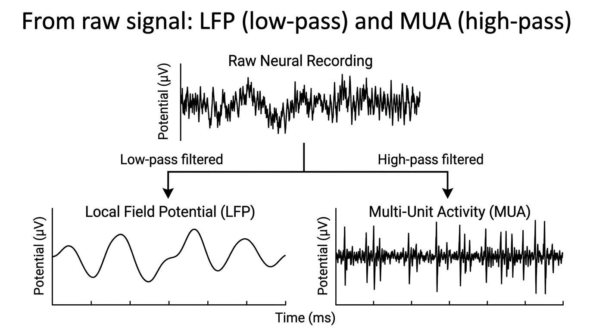
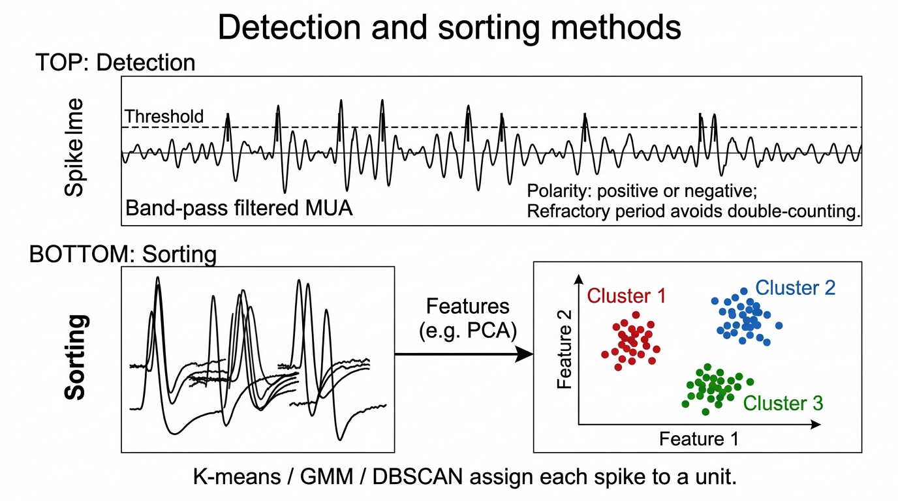

Pipeline
Electrophysiology: LFP and MUA
Extract Ephys reads a recording and saves an LFP file and a MUA file. LFP Analysis computes evoked potentials, current source density and time–frequency measures; MUA Analysis detects and sorts spikes.
Extract Ephys
Choose the Source (TDT tank, Intan .rhd, Open Ephys folder or NWB file), load the recording, pick the stimulus channel and the raw channels, then process:
- Process LFP: optional downsampling by an integer factor after an anti-aliasing low-pass, then a 4th-order Butterworth low-pass and an optional 60 Hz notch (zero-phase). The saved rate is the actual one: 24414.0625 Hz / 24 = 1017.25 Hz for TDT data, not the requested 1000 Hz.
- Process MUA: zero-phase band-pass (preset 300–3000 Hz, Butterworth, order 4, or custom). The saved signal is the band-passed trace used for detection.
- Export NWB… writes the processed LFP and its stimulus as an NWB 2.x file (see NWB export).
The channels saved are the ones used when Process was clicked, even if the selection changed afterwards.

IllustrationInputs and outputs
In
- TDT tank / block folder containing the
Whis(stimulus) andxRAW(raw neural) streams (needs the TDT MATLAB SDK,TDTbin2mat, underUtilities/TDTMatlabSDK/) - Intan RHD2000
.rhdfile (file format 1.0–3.x, traditional single-file format) - Open Ephys binary recording folder (GUI 0.5 or later:
structure.oebin,continuous.dat, TTL events) - NWB 2.x
.nwbfile with an ElectricalSeries in /acquisition or /processing
Out
- LFP
.mat:lfp_data(channels × samples),lfp_channels,lfp_fs,t_lfp,stim_data,stim_fs,t_stim - MUA
.mat:mua_data,mua_channels,mua_fs,t_mua,stim_data,stim_fs,t_stim,filterParams - NWB
.nwb(Export NWB…): LFP in volts in /processing/ecephys/LFP, the stimulus in /stimulus/presentation, electrodes with source channel names. Written with matnwb when installed, otherwise an NWB-style export (not validated).
LFP Analysis
Evoked potentials (ERP)
Stimulus onsets are upward crossings of a threshold by the mean-subtracted stimulus; a crossing closer than the minimum interval to the last accepted onset is dropped, so a train of pulses gives one onset. Each epoch runs from onset − pre to onset + post. Epochs that would run past the recording edges are excluded, not zero-filled, and the ERP is the mean and SD of the valid epochs.
Current source density (CSD)
The CSD is the negative second spatial derivative of the ERP across the ordered channels, divided by the squared spacing[1, 2]. The first and last rows are copied from their neighbours. Sinks (current flowing into cells) and sources appear with opposite signs across depth. It assumes a linear probe, equal spacing and the true channel order (top to bottom), and at least 3 channels. This is the Standard method, in V/m² (no conductivity).
Step 4 of LFP Analysis has a Method menu with four more estimates. They model the active tissue as discs of a given Diameter (500 µm by default) in tissue of conductivity σ (0.3 S/m for cortex) and give the CSD in A/m³:
- iCSD (inverse CSD[25]) inverts the exact potential of those discs. delta: thin discs at each contact. step: the CSD is constant within half a spacing of each contact. spline: a smooth curve between the contacts. Inverse methods amplify noise, so an optional Smoothing (µm) filters across depth afterwards.
- kCSD (kernel CSD[26]) fits many smooth basis sources of width R with a regularisation λ. When R or λ is 0, both are chosen by cross-validation: each contact is predicted from the others and the best combination is kept. The CSD is also given on a 4× finer depth grid.
- Which method? Standard is fine for a quick look at wide, uniform activity. iCSD is more accurate when the active region is small compared with the probe, and at the top and bottom contacts. kCSD is the most robust to noise and to activity beyond the ends of the probe.
- Only the fields of the chosen method are shown; the plot title names the method (for kCSD also the chosen R and λ). Exports, sessions and the methods text keep the method and its parameters.
On a synthetic laminar recording with a known CSD (core/demo/demoCSD.m, no noise), the relative error is about 0.34 for Standard, 0.10 for iCSD delta, 0.04 for iCSD step, 0.004 for iCSD spline and 0.03 for kCSD; with 1% noise, 0.42 for Standard and 0.11 for kCSD. See Validation.
Time–frequency
- Spectrum: Welch's method[13], 2 s Hann segments with 50% overlap, each segment's mean removed; density in units²/Hz, so the area under the spectrum equals the signal variance.
- Spectrogram: short-time Fourier transform, 0.5 s Hann windows, 90% overlap; power in dB; stimulus onsets drawn as dashed lines.
- ERSP / ITPC: complex Morlet wavelets with unit energy (time resolution ≈ cycles / (2π·f) s). ERSP is 10·log10 of the trial-averaged power over the mean baseline power; ITPC is the length of the mean unit phase vector across trials (0 = random phase, 1 = identical phase). Trials whose wavelet would reach past the recording edges are left out at that frequency.
- Band power: band-pass filter plus Hilbert envelope (via the FFT), power = envelope², as % change from the trial-averaged baseline, mean ± SEM. Trials closer to the edges than the filter's settling time are left out for that band.
- The default bands (delta 1–4, theta 4–8, alpha 8–13, beta 13–30, gamma 30–80 Hz) are common conventions that vary between species, areas and labs; edit them in the band table.
Walkthrough: ERP, CSD and the oscillation demo
Walkthrough: every CSD method on the demo LFP
Inputs and outputs
In
- LFP
.matfrom Extract Ephys:lfp_data,stim_data,t_lfp,t_stim,lfp_fs,stim_fs(all required)
Out
- Tabs: Stimulus (threshold and detected onsets), ERP overlay, ERP per channel (mean ± SD), CSD map
- Export
.mat:t,y(ERP averaged over channels),erp_avg,erp_std,erp_channels,n_epochs,onset_times,erp_params, andcsdwhen computed, withcsd_method,csd_unit,csd_params,csd_grid/csd_grid_depth_umand, for kCSD,csd_kcsd(chosen R and λ, cross-validation errors) - Time–frequency tabs: Spectrum (Welch PSD, log–log, bands shaded), Spectrogram (STFT power in dB, dashed stimulus onsets), ERSP / ITPC (dB vs baseline on a blue–white–red scale centred at 0; ITPC 0–1), Band power (% change vs baseline, mean ± SEM per band)
MUA Analysis
Detection
Spikes are detected where the (optionally band-pass filtered) signal crosses a threshold set as a multiple k of the noise level, with positive, negative or both polarities:
- Standard: mean + k·SD.
- MAD: median + k·MAD, a noise estimate that large spikes barely move[5].
- NEO: nonlinear energy operator ψ[n] = x[n]² − x[n−1]·x[n+1][3, 4], thresholded on that scale; picks up either polarity.
- Rolling MAD (the same threshold as MAD over the whole recording, with each crossing moved to the largest nearby peak; despite the name, the threshold does not follow slow changes in the noise) and Percentile (99.9th percentile of the absolute signal; the multiplier is not used).
A short dead time (about 0.3 ms) avoids counting a spike twice.

IllustrationSorting
Each spike's waveform snippet is aligned and reduced to features (PCA, ICA, waveform, wavelet or t-SNE; ICA and wavelet only when FastICA or the Wavelet Toolbox is present). K-means and GMM try 2–10 clusters and keep the number with the best mean silhouette[6]. DBSCAN is density based[7] (epsilon tuned automatically if left empty) and labels unclustered spikes 0 = noise. Optional drift correction matches clusters across time bins.
Clean-up
Auto-merge (on by default) joins clusters whose mean waveforms have the same shape (correlation ≥ 0.95, adjustable) and size (amplitude ratio ≥ 0.85); the status bar lists each merge. Merge selected, Split selected and Undo edit the clusters by hand; the edits are saved with the results.
Quality and responses
Per unit: SNR (peak-to-peak over twice the baseline SD; below 2 is rejected) and the percentage of inter-spike intervals shorter than the refractory period (more than 2% is rejected), with ISI histograms; checks of this kind are discussed by Hill et al.[8] Raster & PSTH shows up to 4 units around every stimulus onset with the mean rate ± SEM; Correlograms shows auto- and cross-correlograms with the refractory period shaded.
Walkthrough: sorting, auto-merge and responses
Inputs and outputs
In
- MUA
.matfrom Extract Ephys:mua_data,mua_fs,t_mua,mua_channels - Optional
stim_data,stim_fs,t_stim(needed to segment by stimulus)
Out
- Plots: signal with detected spikes, waveforms, clusters in feature space, spike rate, quality (ISI histograms, alignment check)
- Saved
.mat:SpikeResults(spike times, cluster IDs, waveforms),SpikeSortParams,clusterQuality,info
Recording formats
All sources are read into the same form (raw channels in volts plus a list of candidate stimulus channels), so processing and saving are identical for every format.
| Source | What is read | Stimulus candidates |
|---|---|---|
| TDT tank / block | xRAW stream (needs the TDT MATLAB SDK) | Whis stream |
| Intan .rhd | Amplifier channels, 0.195 µV per bit; file format 1.0–3.x, single-file layout | Board digital inputs (0/1), board ADC inputs (V) |
| Open Ephys binary | Headstage channels × bit_volts (GUI 0.5 or later) | ADC channels; each TTL line as a 0/1 trace |
| NWB 2.x | First ElectricalSeries (data × conversion) | Stimulus TimeSeries, trial / interval tables |
Details, output variables and limits: File formats.
Demo expectations
The demo tank, LFP and MUA files are described on the demo data page. Expected results (from the in-app Help):
Extract Ephys
- Data: a TDT-like demo block (30 s): 8 raw channels (
xRAW, 24414 Hz, electrodes 100 µm apart) and the whisker stimulus (Whis: 20 ms pulses every 2 s from 1 s, 15 stimuli). The demo tank is read by a built-in stand-in, so the TDT SDK is not needed for it. - Process LFP (low-pass, downsample to ~1017 Hz): each stimulus evokes a negative deflection at 15 ms and a positive one at 40 ms, largest on channel 4 and weaker with distance from it.
- Process MUA (300–3000 Hz): spikes on channels 3–5 (two units on channel 4, one on channel 5), denser in the 50 ms after each stimulus. Save both to try LFP and MUA Analysis.
- Other formats: choose a Source before Try demo data to open the first 6 s of demo channels 3–6 written as an Intan .rhd (20 kHz; stimulus on DIGITAL-IN-01 and a 1 V copy on ANALOG-IN-1), an Open Ephys folder (30 kHz; TTL line 1 and ADC1) or an NWB file (24414 Hz; the whisker stimulus TimeSeries and a trials table). There are 3 stimuli (1, 3 and 5 s). Process LFP gives 1000 Hz (Intan, Open Ephys) or 1017.25 Hz (NWB), with the evoked negative deflection at 15 ms, largest on RAW Ch 2 (= demo channel 4).
- Export NWB… after Process LFP, then choose Source NWB file and Load recording… with the exported file: the LFP opens at its LFP rate with the same channel names and stimulus.
LFP Analysis
- Data:
demo_lfp.mat, 8 channels at 1017.25 Hz, 30 s, 100 µm spacing; 15 stimuli every 2 s from 1 s. - ERP (e.g. pre 0.05 s, post 0.2 s): 15 epochs; N1 (negative) at ~15 ms (about −120 µV at channel 4) and P2 (positive) at ~40 ms; both are largest at channel 4 and fall off over ~150 µm (channels 2–6).
- CSD (spacing 100 µm, order 1–8): a current sink at channel 4 at ~15 ms, flanked by sources above and below (channels 2–3 and 5–6).
- Oscillation demo (Try oscillation demo): the same LFP plus 6 Hz theta (40 µV, on every channel, not phase-locked to the stimuli) and a 40 Hz gamma burst (10 µV, 50–250 ms after each stimulus, channels 3–5, phase-locked). Channel 4 is chosen.
- Spectrum: 1/f background with a clear peak at ~6 Hz (theta) and a small bump near 40 Hz.
- Spectrogram (2–80 Hz): a steady band at 6 Hz, and short 40 Hz patches just after each dashed stimulus line.
- ERSP / ITPC (2–80 Hz, 7 cycles, baseline −0.4 to −0.1 s): about +10 to +12 dB at 36–44 Hz between 50 and 250 ms, ITPC ≈ 0.97 there, and ≈ 0 dB before the stimulus and after ~0.3 s. The ERP itself (N1 / P2) adds a brief broadband increase with high ITPC in the first ~50 ms. On channel 8 (no gamma) there is no 40 Hz increase. 14 of the 15 stimuli are used (the last epoch would run past the end of the recording), and 13 at the lowest frequencies.
- Band power (channel 4): the ERP itself (N1 / P2) gives a very large, brief increase in the first ~50 ms in every band, so the y-axis is scaled to it (the status bar's "largest change" therefore looks from 50 ms on); the gamma burst (roughly +350 to +600 %) is the plateau at 0.05–0.25 s. Theta also swings around the ERP. On channel 8 (far from the ERP, no gamma) theta stays flat (~0 %): theta is not modulated by the stimuli.
MUA Analysis
- Data:
demo_mua.mat, channels 3–5 at 24414 Hz, 30 s, stimulus every 2 s from 1 s. Three units with negative spikes: unit 1 (~90 µV) and unit 2 (~50 µV) on channel 4, unit 3 (~110 µV) on channel 5 (seen weaker on channel 4). Noise ~10 µV. - The demo selects channel 4 and detection MAD, k = 4, negative polarity; click Run.
- What you should get: K-means alone tends to split one unit in two (e.g. 4 clusters, two with the same waveform); with Auto-merge similar clusters on (default) the status bar reports e.g. "Auto-merged cluster 3 into 1 (r = 0.98, amplitude ratio 0.99)" and 2–3 units remain on channel 4: unit 1 (~90 µV), unit 2 (~50 µV) and possibly unit 3 seen weaker from channel 5.
- Raster & PSTH (−0.1 to 0.3 s, 5–10 ms bins): 15 trials; every unit fires more 5–55 ms after each stimulus (unit 1: ~80 vs ~6 spikes/s). Correlograms: the autocorrelograms are empty within ±1 ms (2 ms refractory period); ISI violations ~0%.
Step-by-step instructions and troubleshooting: Extract Ephys, LFP Analysis, MUA Analysis.